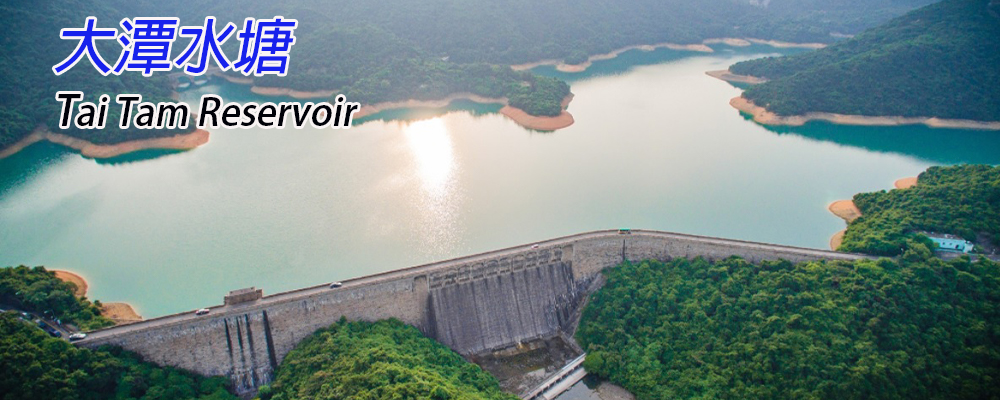
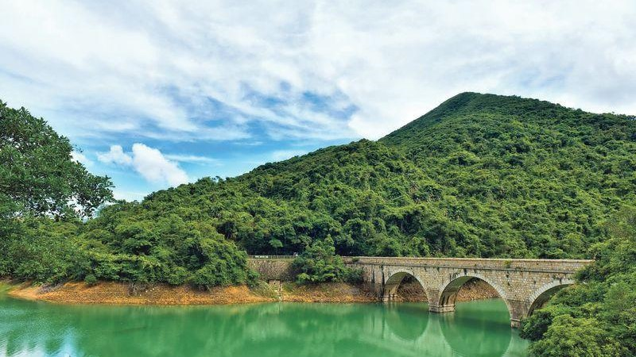
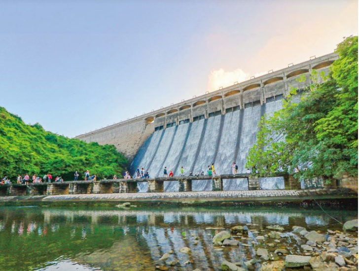
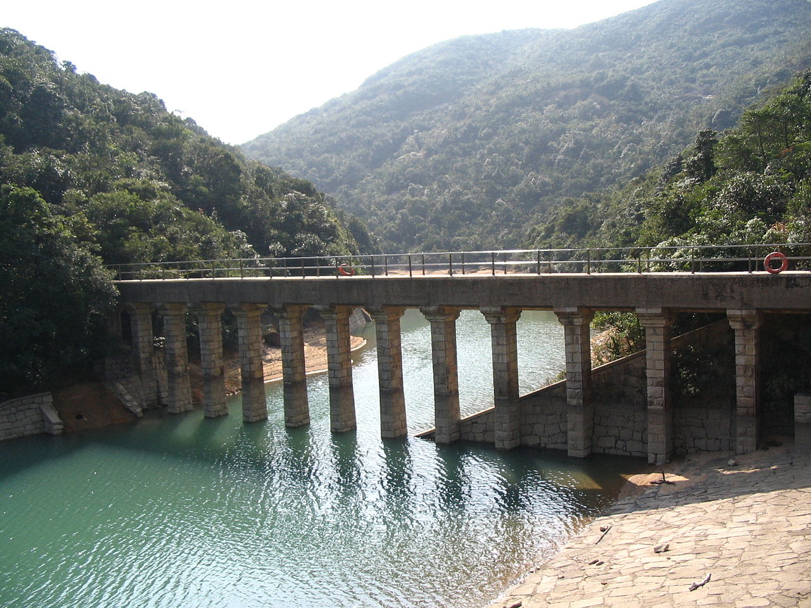

路線難度中級
於鰂魚涌「柏架山道自然徑」出發上山，沿大風坳方向行，約1個多小時抵達大風拗，小休一會，跟大潭水塘路牌指示前往水塘。首先抵達大潭上水塘，上水塘於1883年至1888年期間興建，屬第1期工程，其附近有水掣房及水霸等法定古迹。沿路轉右，前往大潭副水塘，於1904年動工，屬擴建工程，副水塘旁的紅磚屋為昔日水塘工人宿舍，連帶副水塘連石橋及石砌輸水道等被列為法定古迹。
在大潭副水塘沿大潭道走，可抵達大潭中水塘，踏足歐式拱形石橋，此情此景，猶如身置歐洲。繼續前行就是大潭篤水塘，始建於1912年，於1917年峻工。沿途欣賞到以花崗岩建造的石拱橋及水壩等法定古迹，屬大潭水務文物徑古迹之一。離開大潭篤水塘，橫過對面路，經過大潭篤會、大潭港、大潭童軍中心，可抵達打卡熱點的大潭篤水壩底部。全程約10公里，步行約5小時。
在大潭副水塘沿大潭道走，可抵達大潭中水塘，踏足歐式拱形石橋，此情此景，猶如身置歐洲。繼續前行就是大潭篤水塘，始建於1912年，於1917年峻工。沿途欣賞到以花崗岩建造的石拱橋及水壩等法定古迹，屬大潭水務文物徑古迹之一。離開大潭篤水塘，橫過對面路，經過大潭篤會、大潭港、大潭童軍中心，可抵達打卡熱點的大潭篤水壩底部。全程約10公里，步行約5小時。

大潭水塘
大潭水塘的歐式拱形石橋，令人聯想起古雅浪漫的歐洲
離開大潭篤水塘，橫過對面路，經過大潭港，可抵達打卡熱點的大潭篤水壩底部
大潭篤水塘


大潭副水塘石橋連石砌輸水道被列為法定古迹
大潭副水塘
去程：坐港鐵於鰂魚涌站A出口出，向右行約8分鐘，在山腳見「柏架山道自然徑」路牌上山至大風坳，跟大潭水塘路牌指示徒步，可抵達大潭水塘群。
回程：離開大潭篤水塘，坐14號巴士返回西灣河。
回程：離開大潭篤水塘，坐14號巴士返回西灣河。
補給：在起點，鰂魚涌熟食中心及附近的茶餐廳供應港式地道美食；在附近的便行店或超市可補充補給品。
回程時，坐14號巴士返回西灣河，可在該區的食肆「醫肚」充電。
回程時，坐14號巴士返回西灣河，可在該區的食肆「醫肚」充電。